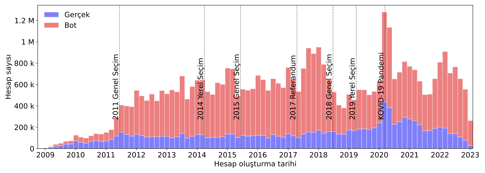
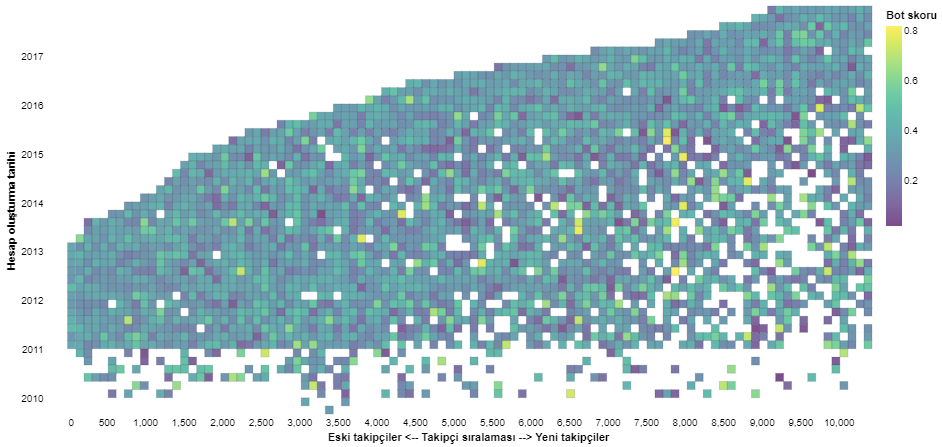
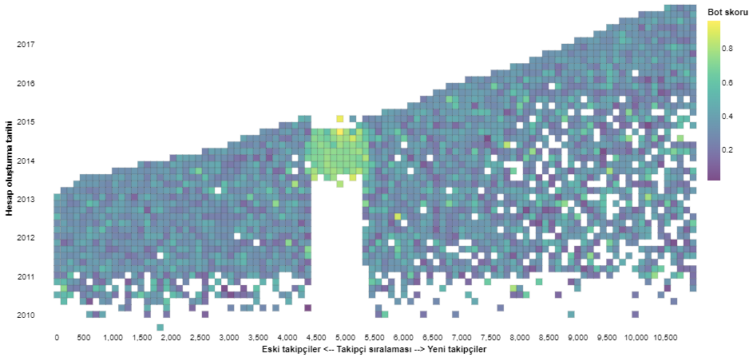
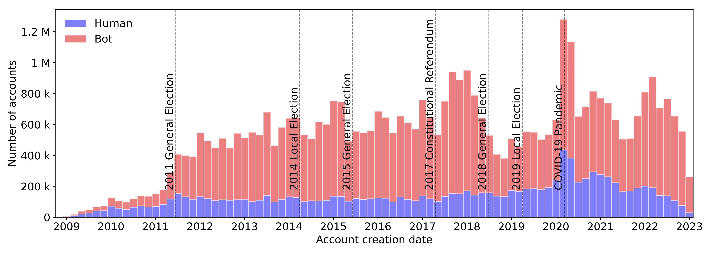

Siyasi figürlerin takipçilerini projemiz kapsamında derlemekte olduğumuz #Seçim2023 veri seti üzerinden analiz etmeye devam ediyoruz. Önceki yazımızda siyasilerin takipçi sayılarındaki değişimi gösteren arayüzümüzü tanıtmıştık. Şimdi ise anomali takipçi sayılarını anlamak için farklı görselleştirme teknikleriyle zenginleştirdiğimiz arayüzümüzü sunuyoruz.
Twitter API üzerinden takipçilere dair veriyi toplamak uzun zaman aldığından ancak 2 aylık periyotlar ile bu veriyi güncelleyebilmekteyiz. Bu kısa analizde, takipçilerin hesaplarının oluşturulma zamanı ve incelediğimiz siyasi figürleri ne zaman takip etmeye başladıkları gibi iki önemli noktanın üzerinde durarak, kullanıcıların gerçek insan davranışını yansıtıp yansıtmadığı hakkında yeni bir trendi kamuoyu ile paylaşıyoruz.
Öncelikle belirtmemiz gerekir ki takipçi sayısındaki değişimler ve bu takipçilerin davranışları siyasetçilerin kontrolü dışında gerçekleşebilir. Ayrıca bir siyasi profili takip eden hesaplar organik takipçiler olabileceği gibi otomatik olarak takipçi sayısını olduğundan yüksek göstermek için de sağlanmış da olabilirler. Takipçi sayısı değişimine dair yaptığımız analizde buna örnek durumlardan bahsetmiştik. Şimdi bu sahte takipçileri otomatik tespit etmeye ve bu sahte takipçilerin siyasilerle ne zaman etkileştiklerine dair detaylı bir inceleme yapıyoruz.
Veri setimizdeki herhangi bir siyasiyi takip eden hesapları detaylı incelediğimizde ve hesaplarının yaratılış tarihlerini göz önüne aldığımızda Türkiye için önemli seçimler öncesi bot hesapların sayılarının artmakta olduğunu ve Kovid-19’a dair ilk vakanın Türkiyede gözlemlendiği Mart 2020 sonrasında da bir artış yaşandığını görmekteyiz.
Anomali takipçi inceleme sistemi üzerinde gözlemlediğimiz örüntüler bir hesabı takip etmeye başlayan ve şüpheli şekilde gerçekleşen aktivitelerin sonucu oluşmaktadır. Bu anomali takipçiler çok benzer zamanlarda yaratılmış ve yaklaşık aynı dönemlerde siyasileri takip ediyor olabilirler. Anomali davranışlarını takip zamanı ve takipçilerin yaratılış zamanları göz önüne alarak incelemek için ısı haritalarından faydalanıyoruz.
|  |  |
Harita üzerindeki yatay eksen siyasileri takip eden kullanıcıları ilk takipçiden son takipçiye kadar sıralamaktadır. Dikey eksende ise takipçi hesapların yaratılış tarihleri belirtilmektedir. Siyasetçilerin çok fazla sayıda takipçisi olduğundan, her bir takipçiyi ayrı ayrı temsil etmek yerine benzer takip sırasında ve hesap açılış zamanlarındaki hesapları bir araya grupladik. Burada her bir grup için seçilen renk bu görselde hesapların ortalama bot olma skorlarını (yüksek değerler veya sarıya yakın renkler yüksek bot riski) temsil etmektedir. Oluşturduğumuz arayüz üzerinde bot skorlarına ek olarak takipçilerin beğeni sayıları, mesaj sayıları ve takipçilerine ait istatistikleri de kullanmak mümkündür. Görseldeki her bir kare üzerine imleç hareket ettirildiğinde ortalama istatistikler paylaşılmaktadır. Yukarıda paylaştığımız iki örnek hesabın (üstte normal hesap, altta sahte takipçili hesap) birinin sahte takipçileri yaratılış zamanlarına bakılarak görülmektedir. İkinci görselde yatay eksendeki takip sırasına göre 4500 ve 5250 arasındaki 750 hesap yüksek bot skoru tespit edilmiş sahte takipçilerdir. İkinci grafik bu anlamda net bir takipçi anomali durumunu yansıtmaktadır.
Anomali takipçileri incelemek için geliştirdiğimiz sisteme erişerek sizlerde takipçi sayısı 50,000 ve üzerinde olan hesaplara dair sonuçları inceleyebilirsiniz.
We analyze the followers of politicians using our #Seçim2023 dataset. Since it requires a significant number of API calls to collect the data on the followers, we can only update this data every 2 months. Using the dataset, we obtain the account creation times of the followers and we estimate the follow time of the politician.
First of all, we need to point out an important point: gaining and losing followers cannot be controlled by the account. In addition, accounts may be organic followers or they may be added using automation. In our follower number change analysis, we explained different mechanisms that may lead changes in followers. We are now conducting a detailed analysis of identifying these anomalous followers and when these anomalous followers interact with politicians.
When we examine the follower accounts in our data set and consider the creation dates of their accounts, we observe that the number of bot accounts is increasing before the important elections of Turkiye, and there has been an increase after March 2020, when the first case of Covid-19 was observed in Turkiye.
The follower heatmap shows the distribution of the followers of politicians on Twitter based on their follow order and profile creation dates. Users who follow politicians are ranked from the first follower to the last follower along the horizontal axis of the heatmap. The follower accounts' creation dates are displayed on the vertical axis. Since politicians tend to have a high number of followers, we do not represent each follower as a single data point. Instead, each point in the graph represents a group of followers that fall in that part of the graph, i.e., have a similar rank and profile creation date. The color used for each category corresponds to the accounts' average bot score in this visualization (higher values or yellowish colors indicate a higher risk of bot behavior). The tool also allows users to visualize based on followers like and post counts as well as their follower counts. Average statistics are displayed when the cursor is moved over each square in the graphic.
The figure presents the follower distribution of a normal Twitter user in the top panel, while the bottom figure displays a user who has a group of fake followers. For the second heatmap, notice that the followers between ranks 4500 and 5200 have been created in a similar period of time and also have high bot scores. Therefore, the second graph reflects a clear follower anomaly description. This is just one example of an anomalous follower case that you can observe in the graphs.